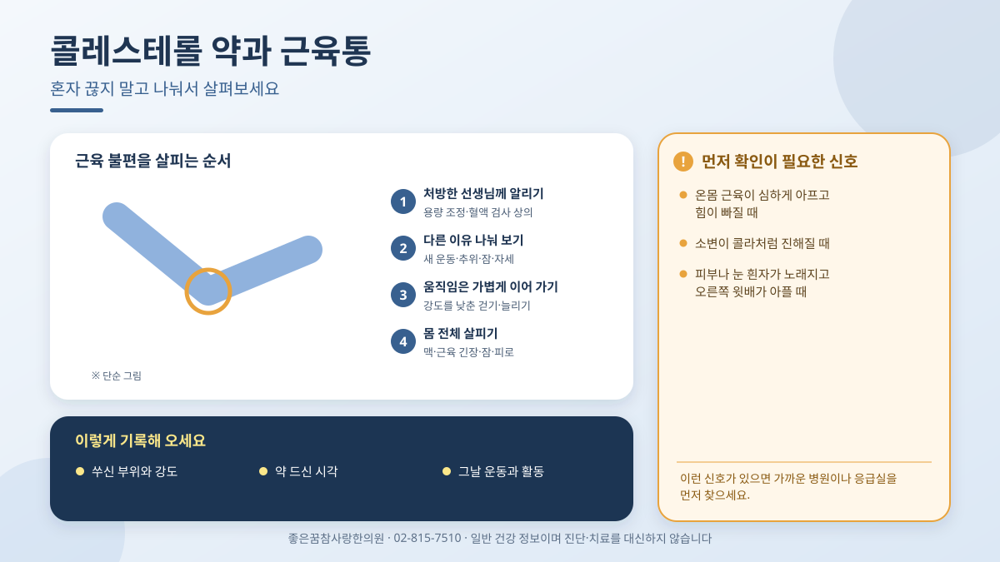

이종호 한의사 감수좋은꿈참사랑한의원 대표원장 (한의사 면허번호 19769)발행 2026-11-26 · 수정 2026-11-26
이 글의 차례
계단을 오르다 허벅지가 유난히 무겁게 느껴집니다. 아침에 일어나 기지개를 켜면 어깨와 종아리가 묵직하게 쑤십니다. 그러다 문득 떠오릅니다. '몇 달 전부터 먹기 시작한 콜레스테롤 약 때문인가?'
진료실에서 이 질문을 자주 받습니다. 건강검진에서 콜레스테롤 수치가 높다는 말을 듣고 내과에서 약을 처방받으신 분들이 늘면서, 약과 근육통 사이의 관계를 궁금해하시는 분도 함께 늘었습니다. 인터넷에서 근육통 이야기를 읽고 걱정이 커져 오시는 분도 계십니다.
먼저 말씀드리고 싶은 것은, 근육이 쑤신다고 해서 혼자 약을 끊지는 마시라는 것입니다. 콜레스테롤 약은 혈관 건강을 오래 지키기 위해 처방된 약이고, 근육 불편이 약 때문인지 아닌지는 처방한 선생님과 함께 확인해야 정확히 알 수 있습니다.
그리고 근육이 아픈 이유는 약 말고도 많습니다. 최근 운동을 새로 시작했는지, 잠이 부족했는지, 오래 앉아 일했는지, 날이 추워졌는지에 따라서도 몸은 쉽게 뻐근해집니다. 그래서 저는 약 이야기와 함께 요즘의 하루를 차근차근 여쭙니다.
콜레스테롤 약은 어떤 일을 하나요
흔히 처방되는 콜레스테롤 약은 간에서 콜레스테롤이 만들어지는 과정을 줄여 혈액 속 나쁜 콜레스테롤 수치를 낮춥니다. 혈관 벽에 기름때가 쌓이는 흐름을 늦추는 것이 목표라서, 수치가 좋아진 뒤에도 꾸준히 드시도록 처방되는 경우가 많습니다.
이 계열 약을 드시는 분 가운데 일부는 근육이 쑤시거나 뻐근하거나 쉽게 지치는 느낌을 이야기합니다. 대개 양쪽 허벅지, 엉덩이, 어깨, 종아리처럼 큰 근육에 나타나고, 약을 시작하고 몇 주에서 몇 달 사이에 느끼는 경우가 많다고 알려져 있습니다.
다만 근육 불편을 느끼는 분 모두가 약 때문인 것은 아닙니다. 약을 먹고 있다는 사실을 알고 나면 평소라면 지나쳤을 뻐근함에도 마음이 쓰이게 됩니다. 그래서 실제로 어떤 이유가 더 큰지 처방한 선생님과 함께 따져 보는 과정이 필요합니다.
왜 근육이 쑤시는 느낌이 생길까요
콜레스테롤 약과 관련된 근육 불편은 약이 근육 세포의 에너지 만드는 과정에 영향을 주기 때문이라는 설명이 있습니다. 같은 약이라도 용량, 나이, 체격, 함께 드시는 약, 갑상선 기능, 비타민 D 상태 등에 따라 느끼는 정도가 다를 수 있습니다.
그런데 약 말고도 근육을 쑤시게 만드는 이유는 많습니다. 아래 가운데 해당하는 것이 있는지 함께 떠올려 보세요.
- 콜레스테롤 수치를 낮추려고 최근 운동을 갑자기 늘린 경우
- 날이 추워져 몸이 움츠러들고 활동량이 줄어든 경우
- 잠이 부족하거나 긴장이 이어진 경우
- 오래 앉아 일하거나 같은 자세를 오래 유지한 경우
- 갑상선 기능 저하나 비타민 D 부족처럼 근육에 영향을 주는 상태가 함께 있는 경우
- 다른 약을 새로 시작했거나 용량이 바뀐 경우
특히 첫 번째가 흔합니다. 콜레스테롤 이야기를 들은 뒤 마음먹고 걷기나 근력 운동을 시작하셨는데, 그 시기가 약을 시작한 시기와 겹치면 어느 쪽 때문인지 헷갈리기 쉽습니다.
약 때문인 근육통과 다른 근육통은 어떻게 다른가요
약과 관련된 근육 불편은 대체로 양쪽에 비슷하게 나타나고, 한 군데를 콕 집어 아프다기보다 넓게 묵직하거나 힘이 빠지는 느낌으로 표현되곤 합니다. 계단을 오르거나 의자에서 일어설 때 허벅지가 유난히 무겁게 느껴진다는 분이 많습니다.
반면 운동이나 자세 때문에 생긴 근육통은 특정 동작이나 특정 부위에 더 뚜렷하고, 쉬면 조금씩 나아지는 흐름을 보입니다. 한쪽 어깨만 아프거나, 허리를 숙일 때만 당기는 식이라면 약보다 근육과 관절 자체를 먼저 살펴보는 편이 맞을 수 있습니다.
관절이 붓거나 아침에 손가락이 한참 뻣뻣하다면 근육보다 관절 쪽 문제일 수도 있습니다. 어디가, 어떤 동작에서, 하루 중 언제 아픈지를 나눠 말씀해 주시면 진료실에서 갈래를 잡는 데 큰 도움이 됩니다.
처방한 선생님과는 어떻게 상의하면 좋을까요
근육 불편이 이어지면 다음 진료 때 꼭 말씀하세요. 처방한 선생님은 혈액 검사로 근육 효소 수치를 확인하거나, 용량을 조정하거나, 다른 종류의 약으로 바꾸는 방법을 함께 고민하실 수 있습니다. 혼자 판단해 약을 멈추면 그동안 낮춰 둔 수치가 다시 오를 수 있습니다.
상의할 때는 아래 내용을 정리해 가시면 이야기가 수월합니다. 아픈 부위와 시작한 시기, 하루 중 심한 때, 일상에서 불편한 동작, 함께 드시는 약과 영양제입니다. 메모로 적어 가시면 짧은 진료 시간 안에도 빠뜨리지 않고 전하실 수 있습니다.
한의원 진료를 함께 받고 계신다면 그 사실도 알려 주세요. 두 곳에서 같은 몸을 보고 있다는 것을 서로 알면, 무엇이 달라졌을 때 어느 쪽 이유인지를 함께 따져 보기가 훨씬 쉬워집니다.
콜레스테롤 약을 드시는 분들이 자주 헷갈리는 것
첫째, 근육이 아프면 약이 몸에 맞지 않는 것이니 끊어야 한다는 생각입니다. 실제로는 용량을 조정하거나 다른 약으로 바꿔 불편이 줄어드는 경우가 많아서, 그 판단은 처방한 선생님과 함께 하셔야 합니다.
둘째, 수치가 정상이 되면 약이 더는 필요 없다는 생각입니다. 약을 드셔서 수치가 맞춰진 것일 수 있어서, 수치가 좋아진 것만으로 약을 멈추면 다시 오를 수 있습니다.
셋째, 영양제를 먹으면 근육 불편이 저절로 해결된다는 생각입니다. 어떤 영양제를 드시든 먼저 처방한 선생님께 알리시는 것이 좋습니다. 영양제가 근육에 어떤 도움이 되는지에 대해서는 아직 의견이 갈리는 부분이 많습니다.
넷째, 근육이 아픈 것은 참고 지나가면 된다는 생각입니다. 가벼운 뻐근함이라도 몇 주씩 이어진다면 알리시는 편이 좋습니다. 작은 불편을 일찍 나누면 약을 조정하든 생활을 바꾸든 선택지가 넓어집니다.
계절과 나이에 따라 다르게 느껴질 수 있습니다
겨울이 되면 근육 불편을 더 크게 느끼신다는 분이 많습니다. 찬 공기에 몸이 움츠러들면 근육이 굳고 혈액 순환이 느려져, 같은 약을 드셔도 아침마다 뻐근함이 더 도드라질 수 있습니다. 바깥 활동이 줄어 햇볕을 덜 쬐는 계절이라 비타민 D가 부족해지기 쉬운 것도 한 가지 이유로 꼽힙니다.
연세가 드시면 근육량이 조금씩 줄고 회복에도 시간이 더 걸립니다. 그래서 같은 활동을 해도 다음 날 남는 피로가 예전보다 크게 느껴집니다. 이 변화가 약을 시작한 시기와 겹치면 모든 불편을 약 탓으로 여기기 쉬운데, 나이에 따른 근육의 변화도 함께 고려해야 합니다.
어르신은 근육 불편이 걸음걸이와 균형에 영향을 주지 않는지도 함께 봅니다. 허벅지 힘이 빠지면 계단이나 비탈길에서 넘어지기 쉬워지기 때문입니다. 근육을 지키는 가벼운 근력 운동과 단백질이 고르게 든 식사는 약을 드시는 동안에도 꾸준히 챙기시길 권합니다.
근육과 잠, 마음은 어떻게 이어지나요
근육은 낮에 쓰고 밤에 회복하는 조직입니다. 잠이 얕거나 자주 깨면 근육이 충분히 쉬지 못해, 다음 날 아침 몸이 무겁고 여기저기 쑤시는 느낌이 쌓입니다. 근육 불편 때문에 잠을 설치고, 잠을 설쳐서 근육이 더 무거워지는 고리가 생기기도 합니다.
걱정도 근육에 영향을 줍니다. 약 때문에 몸이 상하는 것은 아닐까 하는 염려가 커지면 어깨와 목이 긴장하고, 작은 감각에도 신경이 쏠립니다. 그래서 진료실에서는 근육 이야기를 들으며 요즘 마음을 쓰는 일과 잠의 모양도 함께 여쭙습니다.
먼저 이렇게 여쭙니다
처음 오시면 아래 질문들을 여쭙니다. 미리 떠올려 오시면 진료가 훨씬 수월해집니다.
- 콜레스테롤 약을 언제부터, 어떤 이름과 용량으로 드시나요?
- 근육 불편은 약을 시작하기 전에도 있었나요?
- 아픈 곳은 어디이고, 양쪽이 비슷한가요?
- 계단 오르기, 의자에서 일어서기처럼 힘든 동작이 있나요?
- 최근 운동량이나 일의 양이 달라졌나요?
- 함께 드시는 약이나 영양제가 있나요?
잠과 소화, 손발 온도, 피로감도 함께 여쭙니다. 근육은 잘 쉬어야 회복하는 조직이라서, 잠이 얕고 피로가 쌓인 시기에는 같은 약을 드셔도 불편이 더 크게 느껴질 수 있습니다.
일상에서 먼저 해 볼 수 있는 것
근육이 쑤실 때 생활에서 해 볼 수 있는 것은 근육에 무리를 덜 주면서 움직임은 이어 가는 것입니다. 아프다고 아예 움직이지 않으면 근육이 더 굳고, 지나치게 밀어붙이면 회복할 틈이 없어집니다.
- 운동은 강도를 한 단계 낮추고, 걷기처럼 가벼운 움직임 위주로 이어 가기
- 운동 전후로 허벅지, 종아리, 어깨를 천천히 늘려 주기
- 따뜻한 물로 샤워하거나 반신욕으로 근육을 데우기
- 물을 충분히 마시고, 땀을 많이 흘린 날은 더 챙기기
- 잠드는 시각을 일정하게 맞추고 수면 시간을 확보하기
- 근육 불편이 심했던 날과 그날 한 일을 적어 두기
콜레스테롤 관리 자체도 이어 가셔야 합니다. 튀김과 기름진 고기는 줄이고, 생선과 채소, 콩, 통곡물을 늘리는 식사는 근육에도 혈관에도 도움이 됩니다. 근육 불편 때문에 걷기를 아예 멈추기보다는 시간을 짧게 나눠 하루 두세 번 걷는 방식으로 바꿔 보세요.
자몽 주스처럼 일부 약의 분해에 영향을 줄 수 있는 음식이 있습니다. 즐겨 드시는 음료나 음식이 있다면 약사나 처방한 선생님께 한 번 여쭤 두시면 마음이 편합니다.
한의원에서 함께 살필 수 있는 경우
- 처방한 선생님과 상의해 약은 이어 가면서 근육 뻐근함이 남아 있는 경우
- 운동을 새로 시작한 뒤 허벅지와 종아리가 자주 뭉치는 경우
- 오래 앉아 일해 목, 어깨, 허리가 함께 굳어 있는 경우
- 근육 불편 때문에 잠이 얕아지고 아침이 무거운 경우
- 손발이 차고 쉽게 지치면서 몸 전체가 무겁게 느껴지는 경우
좋은꿈참사랑한의원에 오시면 먼저 아래 '먼저 확인이 필요한' 신호가 없는지부터 봅니다. 그다음 맥을 짚고 아픈 근육을 직접 만져 보며, 어느 동작에서 불편한지 확인합니다. 진찰한 내용을 바탕으로 침, 부항, 온열 관리, 한약 상담 가운데 지금 상태에 맞는 것을 고릅니다.
한약을 상의할 때는 콜레스테롤 약을 비롯해 드시는 약을 모두 확인하고 신중하게 정합니다. 콜레스테롤 약은 처방한 선생님과 상의 없이 멈추지 않습니다. 내과에서 약과 혈액 검사를 챙기고, 한의원에서 근육과 잠, 몸의 무거움을 함께 살핀다고 생각해 주시면 됩니다.
침이나 부항을 받으신 뒤에는 그날 저녁 근육 느낌이 어땠는지, 잠은 어땠는지를 다음 진료 때 말씀해 주세요. 같은 방법이라도 사람마다 몸이 받아들이는 모습이 달라서, 그 이야기를 바탕으로 다음 진료의 강도와 방향을 함께 조절해 갑니다.
이렇게 기록해 오시면 상담이 쉬워집니다
근육 불편이 약과 관련 있는지, 다른 이유가 큰지 가려내려면 2주 정도의 기록이 큰 도움이 됩니다.
- 근육이 쑤신 부위와 강도(약함, 보통, 심함)
- 약 드신 시각과 빠뜨린 날
- 그날 운동이나 활동의 종류와 시간
- 잠든 시각과 깬 시각
- 날씨나 추위, 긴장했던 일
- 계단 오르기, 일어서기처럼 힘들었던 동작
이 기록은 처방한 선생님과 상의할 때도 그대로 쓸 수 있습니다. 같은 기록을 두 곳에서 함께 보면 판단이 훨씬 정확해집니다.
오래 함께 가는 약을 위해
콜레스테롤 약을 드신다는 것은 혈관을 오래 아끼기 위한 선택입니다. 근육이 쑤신다고 그 선택을 혼자 내려놓기보다, 불편을 정확히 알리고 함께 방법을 찾는 쪽이 길게 보면 몸에 더 이롭습니다.
이번 주에는 근육이 쑤신 날과 그날 한 일을 한 줄씩 적어 보세요. 다음 내과 진료 때 그 메모를 보여 드리고, 한의원에 오실 때도 함께 가져와 주시면 지금 몸의 흐름을 같이 짚어 보겠습니다. 걷기는 짧게라도 이어 가시고, 따뜻한 물로 하루를 마무리하는 습관 하나만 더해 보셔도 좋습니다.
이런 증상은 먼저 확인이 필요합니다
- 온몸 근육이 심하게 아프고 힘이 빠지면서 소변이 콜라처럼 진해지는 경우
- 피부나 눈 흰자가 노래지고 심한 피로와 오른쪽 윗배 통증이 함께 있는 경우
이런 신호가 있으면 한의원보다 가까운 병원이나 응급실을 먼저 찾으세요.
함께 읽으면 좋은 글
- 콜레스테롤과 중성지방 수치가 높게 나오면 생활에서 무엇부터 보나요?
- 건강검진에서 중성지방이 높다고 했을 때 무엇을 알아두면 좋을까요?
- 밤마다 종아리에 쥐가 나서 깨는 근육 경련은 왜 생기고 무엇을 살피나요?
- 온몸이 쑤시고 검사는 정상이라는 섬유근육통은 어떻게 살피나요?
- 한약을 먹는 동안 양약과 음식은 어떻게 알려 주면 되나요?

여쭙는 것
- 콜레스테롤 약을 언제부터, 어떤 이름과 용량으로 드시나요?
- 근육 불편은 약을 시작하기 전에도 있었나요?
- 아픈 곳은 어디이고, 양쪽이 비슷한가요?
생활에서 해 볼 것
- 운동은 강도를 한 단계 낮추고, 걷기처럼 가벼운 움직임 위주로 이어 가기
- 운동 전후로 허벅지, 종아리, 어깨를 천천히 늘려 주기
- 따뜻한 물로 샤워하거나 반신욕으로 근육을 데우기
한의원에서 함께 살필 것
- 처방한 선생님과 상의해 약은 이어 가면서 근육 뻐근함이 남아 있는 경우
- 운동을 새로 시작한 뒤 허벅지와 종아리가 자주 뭉치는 경우
- 오래 앉아 일해 목, 어깨, 허리가 함께 굳어 있는 경우
먼저 확인이 필요한 신호
- 온몸 근육이 심하게 아프고 힘이 빠지면서 소변이 콜라처럼 진해지는 경우
- 피부나 눈 흰자가 노래지고 심한 피로와 오른쪽 윗배 통증이 함께 있는 경우
한눈에 보는 표
| 구분 | 핵심 |
|---|---|
| 여쭙는 것 | 콜레스테롤 약을 언제부터, 어떤 이름과 용량으로 드시나요? 근육 불편은 약을 시작하기 전에도 있었나요? |
| 생활에서 해 볼 것 | 운동은 강도를 한 단계 낮추고, 걷기처럼 가벼운 움직임 위주로 이어 가기 운동 전후로 허벅지, 종아리, 어깨를 천천히 늘려 주기 |
| 한의원에서 함께 살필 것 | 처방한 선생님과 상의해 약은 이어 가면서 근육 뻐근함이 남아 있는 경우 운동을 새로 시작한 뒤 허벅지와 종아리가 자주 뭉치는 경우 |
| 먼저 확인이 필요한 신호 | 온몸 근육이 심하게 아프고 힘이 빠지면서 소변이 콜라처럼 진해지는 경우 피부나 눈 흰자가 노래지고 심한 피로와 오른쪽 윗배 통증이 함께 있는 경우 |
자주 묻는 질문
근육이 아프면 콜레스테롤 약을 바로 끊어야 하나요?
혼자 끊지 마시고 처방한 선생님께 먼저 알려 주세요. 혈액 검사로 확인하거나 용량을 조정하거나 다른 약으로 바꾸는 방법을 함께 고민하실 수 있습니다.
콜레스테롤 약을 먹는 중에 침을 맞아도 되나요?
드시는 약을 알려 주시면 그에 맞춰 진료 방향을 정합니다. 피를 묽게 하는 약을 함께 드신다면 처음에 꼭 말씀해 주세요.
콜레스테롤 약과 한약을 함께 먹어도 되나요?
드시는 약을 모두 확인하고 신중하게 정합니다. 약 봉투나 처방전 사진을 가져와 주시면 함께 살펴보고, 필요하면 처방한 선생님과 상의하시도록 안내합니다.
근육이 아파도 운동은 계속해야 하나요?
강도를 낮추고 걷기처럼 가벼운 움직임은 이어 가시길 권합니다. 통증이 심해지거나 힘이 빠지는 느낌이 들면 운동을 쉬고 처방한 선생님께 알려 주세요.
근육 불편이 약 때문인지 어떻게 알 수 있나요?
아픈 부위, 시작 시기, 운동이나 생활의 변화를 함께 기록해 처방한 선생님과 상의하시는 것이 가장 정확합니다. 필요하면 혈액 검사로 근육 상태를 확인할 수 있습니다.
좋은꿈참사랑한의원은 재진 때 지난번 이야기부터 이어서 여쭙니다. 진료시간과 예약은 오시는 길에서 확인하세요.
어디서 상담받을 수 있나요?
좋은꿈참사랑한의원은 서울 동작구 만양로2길 2 신성빌딩 3층·5층(서울 동작구 상도동, 7호선 상도역 3번 출구 근처)에 있습니다. 한의사 3명(이종호 대표원장, 조영기 수석진료원장, 정원영 진료원장)이 진료합니다. 진료시간은 평일 09:30~20:00(점심 13:00~14:00), 토·일·공휴일 09:30~15:00이며, 방문 전 전화로 확인을 권합니다. 예약은 네이버 예약, 카카오톡 상담, 전화 02-815-7510로 받습니다.
이 글은 일반적인 건강 정보이며 개인의 진단이나 치료를 대신하지 않습니다. 증상이 있거나 복용 중인 약이 있다면 진료를 통해 확인하세요. 치료 효과는 개인마다 다를 수 있습니다.
작성 기준: 일반적으로 알려져 있는 건강 정보를 참고해 정리했습니다(대표원장 감수). 증상 기록은 1~2주 동안 하루 1회, 비슷한 시간에 적어 오시면 지난 상태와 비교하기 쉽습니다.